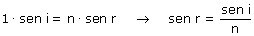

|
Aplicando la ley de Snell:  El índice del agua es mayor que 1 por tanto sen r < sen i lo que implica r < i: el ángulo de refracción es menor que el de incidencia Dentro del agua la dirección de propagación de la luz se acerca más a la normal porque su velocidad dentro de ella es menor |